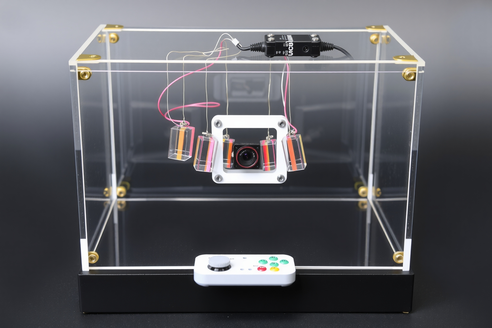
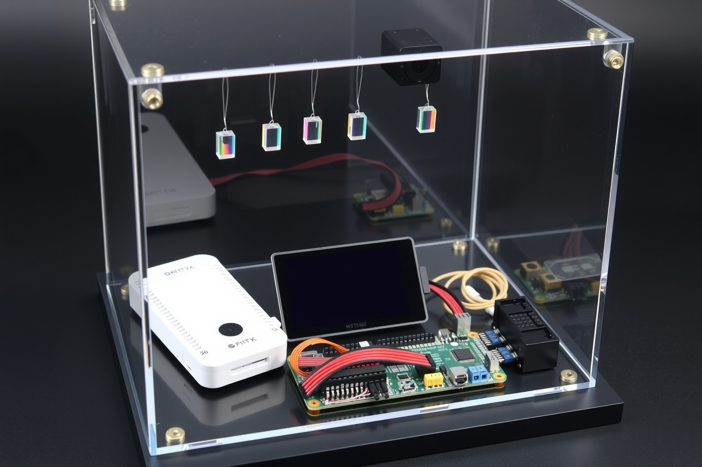

Industrial design exploration · Rev 0.1
entropy c
Four visual languages for a portable optical entropy experiment: product visualization, whiteboard ideation, engineering blueprint, and technical ink cutaway.

Physical direction — roughly 300 × 220 × 160 mm
A laser-cut acrylic chamber on a closed electronics base. Five small prism pendulums hang in the camera’s inward-only field of view. CoreS3, sensors, H-bridge, motor, and wiring live in the base; the image is a form study, not a wiring diagram.

Assembly intent
Flat acrylic panels and M3 hardware above a removable electronics tray. The generated board shapes are illustrative; the purchased M5Stack parts and their verified dimensions govern the actual tray layout.